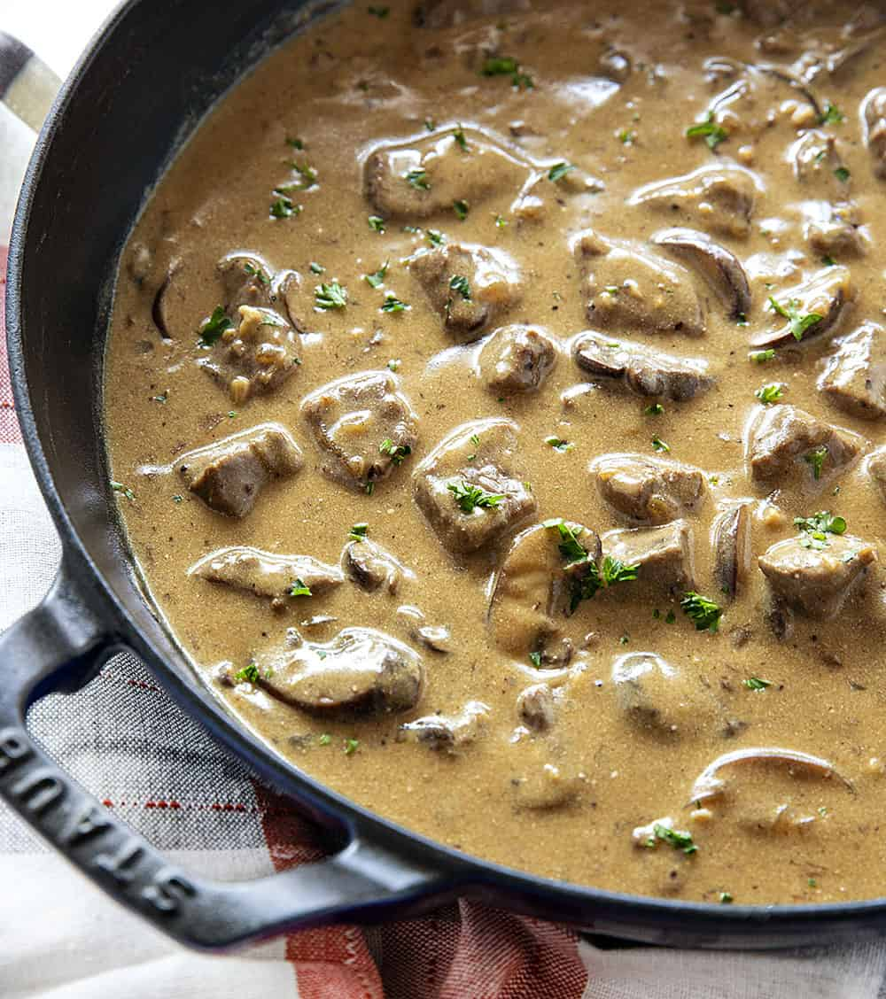

Beef Stroganoff

Description
Beef Stroganoff is typically a rich dish, yet it's quite simple to make. This recipe uses nonfat sour cream to help cut down on the fat content.
Ingredients
- 1 pound sirloin steak, cut into bite size strips
- 1 onion, chopped
- 1½ tablespoons all-purpose flour
- ¾ teaspoon salt
- ¼ teaspoon paprika
- ⅛ teaspoon ground black pepper
- 1 (10.75 ounce) can condensed cream of mushroom soup
- 1¼ cups fat free sour cream
- 1 (8 ounce) package egg noodles
Steps
- Brown the beef strips in a large skillet over medium high heat and drain excess fat. Add the onion and saute for 5 minutes, or until tender. Stir in the flour, salt, paprika and ground black pepper.
- Add the soup, reduce heat to medium low and let simmer for 15 minutes. Then add the sour cream, stirring well.
- Prepare egg noodles according to package directions. Serve beef mixture over the egg noodles.